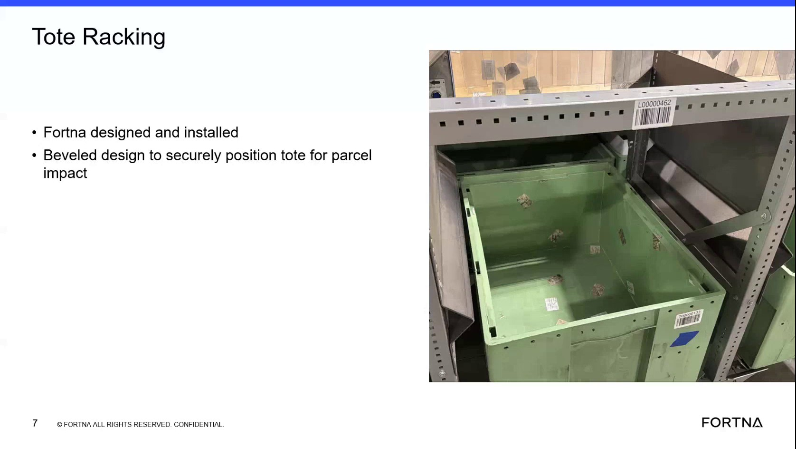

| Procedure ID | proc_verify_tote_rack_centering_features_and_tote_positioning_v1 |
|---|---|
| Title | Verify Tote Rack Centering Features And Tote Positioning |
| Procedure Type | reference |
| Primary Role | operator |
| Support Safe | Yes |
| Validation Status | needs_sme_review |
| Merge Status | source_finalized |
Reference check to confirm the tote rack features described in training are present and that the tote position on the cylinder matches the documented centering and secure-positioning design intent.
Use when visually verifying that a tote rack matches the training description for tote placement, centering features, side fins, and beveled positioning design.
Responsible role: operator
Instruction:
Locate the tote rack and identify the position where the tote sits on the cylinder. Compare the observed rack to the training image or description.
Expected result:
The tote rack is identified and the tote position on the cylinder is recognizable.
Screens / Images:

Stop or Escalate If:
Responsible role: operator
Instruction:
Observe whether the rack includes the small feet described in the source and verify that these features align the dropped tote toward the center position.
Expected result:
Small feet are visible on the rack and match the training description of tote-centering features.
Screens / Images:
Stop or Escalate If:
Responsible role: operator
Instruction:
Check whether the tote fit appears tight in the rack as described in the training segment.
Expected result:
The tote fit appears consistent with the training description of a tight fit.
Screens / Images:
Stop or Escalate If:
Responsible role: operator
Instruction:
Observe the sides of the tote rack for fins and verify that the fins are positioned to help move packages toward the center if they hit off-center.
Expected result:
Side fins are visible and match the training description of package-centering features.
Screens / Images:
Stop or Escalate If:
Responsible role: operator
Instruction:
Compare what is present on the rack to the documented design intent that the tote racking uses a beveled design to securely position the tote for parcel impact.
Expected result:
The observed rack features are consistent with the training description of a beveled design intended to securely position the tote.
Screens / Images:
Stop or Escalate If: